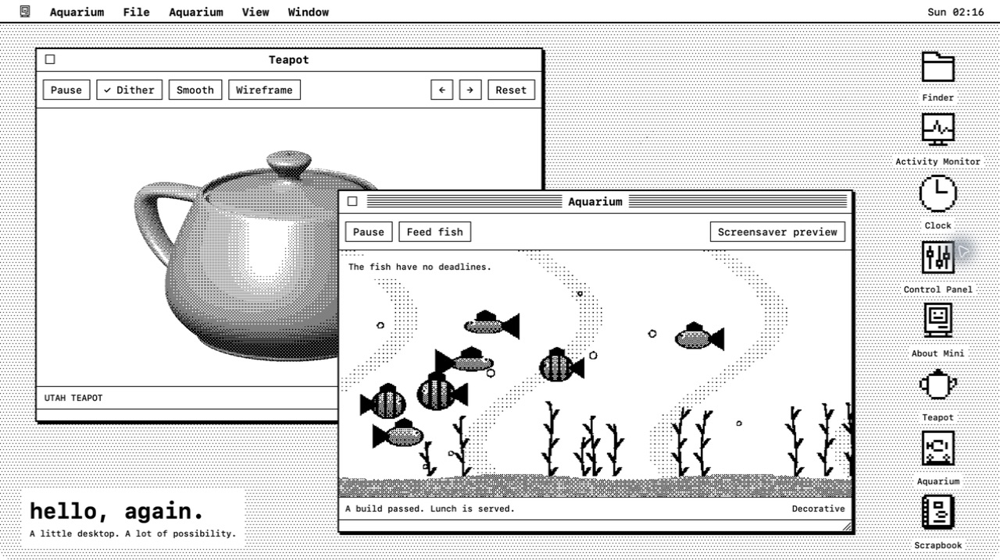

Hello Mini
Inspired by 1984.
Built for today.
- Applications
- 15 little distractions
- Appearances
- 5 ways to time travel
- Available memory
- More than seems polite
UsefulRidiculous
FOR THE MAC ON YOUR DESK
A little desktop.
A lot of possibility.
Your modern Mac has a tiny, deeply unserious Macintosh living inside it.
Meet your new old MacApple silicon · macOS 26+ · Free & open source
Hello Mini
Inspired by 1984.
Built for today.
A DESKTOP WITH QUESTIONABLE PRIORITIES
Watch your machine work. Keep a thought. Feed a fish.
There is, technically, a productivity angle.

PICK YOUR PARTICULAR NOSTALGIA
From monochrome to pinstripes and blue gel. The applications stay the same; the decade is up to you.
Feeling purist? Fit the whole desktop into 512 × 384. Even the teapot.
HELLO MINI FOR MAC
Free, open source, and yours to tinker with.
Check release availabilitymacOS 26 or later · Apple silicon
Release builds are signed and notarized by Apple.
Prefer to build it yourself? The source is on GitHub.